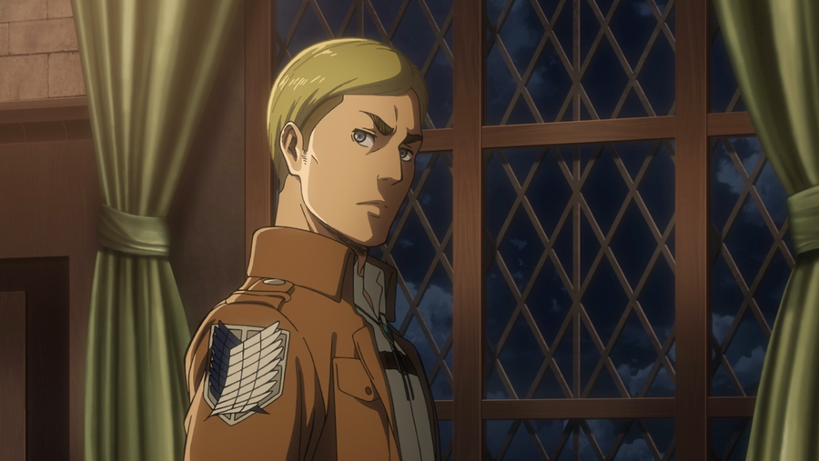
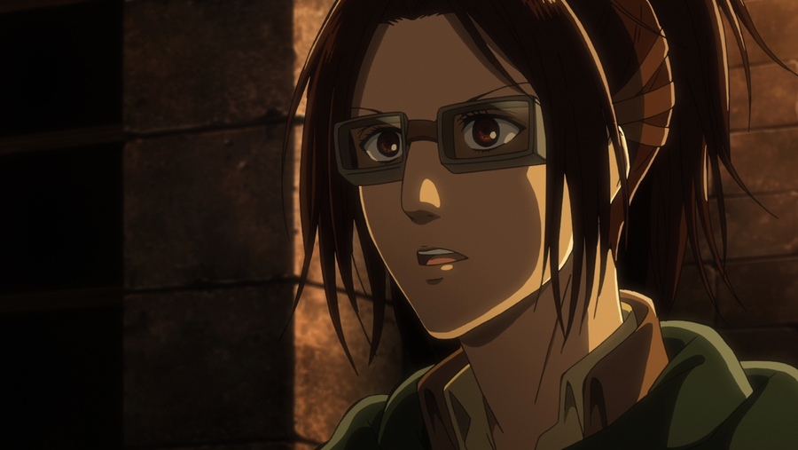
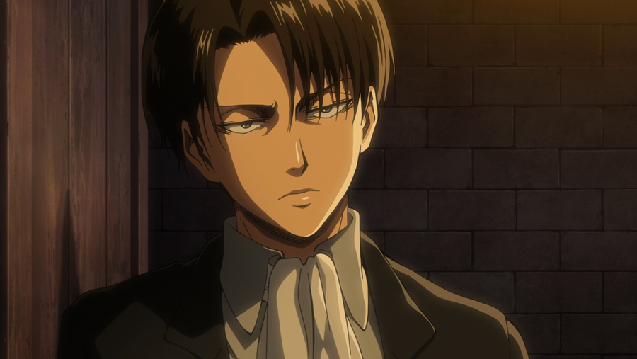

Strategy & resolve
Erwin Smith
The Survey Corps commander is known for plans that depend on reading both the battlefield and the people around him. His pursuit of the truth asks an immense price of his soldiers and himself.
Field guide · Chapter 01
Begin with the walls. Follow the soldiers who dared to leave them. Then look at the history that changes everything.
Situation report
Attack on Titan begins in a society enclosed by three enormous walls. Beyond them roam Titans: giants that make venturing outside a deadly risk.
When the outer defences are breached, a familiar world collapses. Eren Yeager and his friends enter military training, each carrying a different idea of what freedom might mean.
The Survey Corps pursues answers beyond the walls. Its expeditions slowly turn a struggle for survival into a much larger question about memory, power and the stories nations tell.
Start with Season 1 ↗Four branches. Different duties.
Cadets learn the same foundations before deciding where to serve. Each branch has its own responsibilities and emblem.
Scouts undertake expeditions outside the walls, study Titans and reclaim lost territory. Their work trades certainty for the chance of discovery.
The Garrison maintains the walls, operates defensive artillery and protects settlements. When a district is breached, its soldiers support the evacuation.
The Military Police works in the interior, serving the monarchy and keeping order. Its privileged position stands in sharp contrast to life on the frontier.
New recruits train in discipline, survival and omni-directional mobility. Graduation leads to a choice of service, with entry to the Military Police restricted to top graduates.
Leadership dossiers
Different instincts. Shared responsibility. Leadership means choosing a path when there is no safe one.

Strategy & resolve
The Survey Corps commander is known for plans that depend on reading both the battlefield and the people around him. His pursuit of the truth asks an immense price of his soldiers and himself.

Curiosity & discovery
A scientist as well as a soldier, Hange treats the unknown as something to investigate. Research, observation and an unconventional perspective make a different kind of weapon.

Precision & judgement
The captain of an elite squad brings exceptional skill to the front line. He understands that a leader cannot promise a correct decision, only take responsibility for making one.
Restricted records
Spoilers for Season 3 and the Final Season. Open the records only when you are ready.
The walls stand on Paradis Island. Across the sea, Marley is a powerful nation that uses Titan inheritors as military assets. Discovering the outside world challenges the islanders’ understanding of who they are fighting and why.
Titan power begins with Ymir Fritz. Her legacy passes through the Subjects of Ymir, connecting later inheritors through the mysterious Paths. The Nine Titans are distinct inherited powers, not nine individual creatures that remain unchanged forever.
Memories can be inherited, suppressed or used as political tools. The series repeatedly asks how people choose a future when the past reaches into almost every decision.
Story and characters belong to Hajime Isayama and the original rights holders. Promotional art and anime stills are sourced from the official anime websites for this non-commercial student fan project. The archive crest is a simplified, original decorative design, not an official regiment insignia.
Image-by-image source list · Titan reference · Crunchyroll watch-order guide